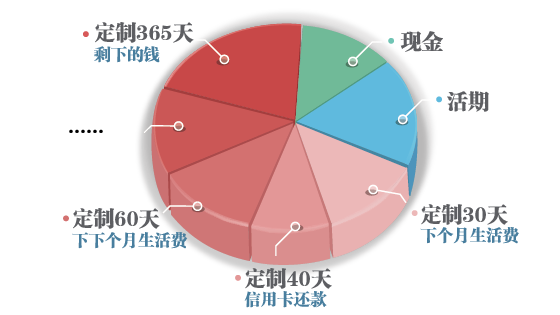
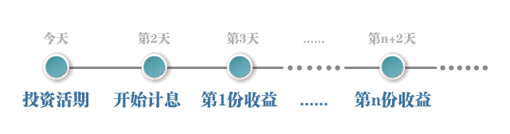
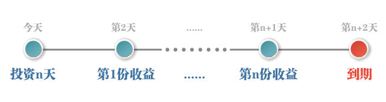

悠米理念
欢迎使用上海能睿金融信息服务有限公司旗下产品——悠米钱包，我们致力于提供极致灵活的方案为您管理资产流动性，使得全部闲置资金增值（而非其他平台以承担高额风险的方式），以实现更高的收益率。
灵活配置
悠米钱包为您准备了如下2个理财账户供您灵活配置：
| 账户 | 投资期限 | 年化收益率 |
| 悠米活期 | 随存随取 | 8% |
| 悠米定制 | 7-365天自由选择 | 8.04%-14.50% |
*悠米定制账户的资产到期后，若未全部转出，剩余资金将在第二天自动转入悠米活期。

理财建议:
1.留下约1个月生活费的现金（含银行活期存款）以供日常开销
2.按需确认自己的活期储备（建议1-3个月生活费），存入悠米活期账户，以供临时开销和紧急备用
3.为特殊事项开销（如信用卡还款、支付房租等）配置对应期限的悠米定制账户
4.按月间隔将生活费分批存入悠米定制账户，以供将来每月日常开销
5.若资产仍有剩余，全部存入悠米定制账户365天期限，以获取最大收益
安全保障及资金去向
起投金额
悠米钱包任何理财账户的起投金额为2元，不设上限
注意银行卡限额，超额可分多笔存入。
收益如何计算？
您的收益=本金×年化收益率×投资天数/365
例：小悠在悠米定制账户投资10万元，期限设定为90天，年化收益率为11%，90天后得的收益为 100,000x11%x90/365=2712.33元
*活期收益视投资天数为1，每日复利结算。
何时开始计息？何时可以转出/提现？
• 悠米活期： 转入后的第2天开始计息，每日结算前一日利息，投资后可随时提现。

• 悠米定制：转入后的第2天开始计息，每日结算当日利息。以n天期产品为例，从转入后第2天起每日结算收益，共计n次，在第n+2天到期时可申请提现或转入其他账户。

定制到期后自动转为活期？
存入悠米定制账户的资金，到期后若未全部转出，剩余部分资金将于次日自动转入悠米活期账户中并享有活期收益。
提现多久到账？
15:00前申请提现成功，次日即可到账（节假日无休）；15:00后申请提现成功，将顺延一天。
简单记账
“我的零钱”账户可用于记录您除了悠米投资以外的其它资产余额。首先您需要输入该项资产的初始值，而后您可以通过键盘上的加减号进行单笔收入/支出的记账操作，也可以通过直接修改余额的方式记录一段时间的综合收支。我们希望每个人都能以自己喜欢的频率去管理生活收支，而不受到传统记账方式必须随手记录的拘束。
理财流水自动入账
您在悠米钱包的任何投资、提现都会被自动记录在“我的零钱”账户下。
为什么为“我的零钱”余额是负数？
“我的零钱”账户的默认余额为零，如果您不喜欢输入自己的实际资产余额，那么该账户仅会自动记录您在悠米钱包的投资和提现情况，当投资>提现时该账户余额将变为负数，表示您在悠米钱包中投入的资产。若负数给您带来了任何不愉快的体验，您可以通过点击该数值旁的“小眼睛”图标关闭数值显示。
期待更多
悠米钱包将努力提供更加完善的资产管理体验，包括：收支类别记录、每月账单、消费习惯大数据对比等丰富而又同样简单实用的功能，敬请期待。
实名认证
每位悠米用户在投资前都必须通过实名认证，一经认证，不得修改，且从此资金只能进出于您本人名下的银行卡。这样既杜绝了账户盗用的风险，又保证了您在投资时所见电子合同的合法性。
绑定银行卡
绑定银行卡后，您才可以在悠米钱包进行各项支付活动。开通过程中安全可靠，仅需要验证您的身份证号和您的银行预留手机号，无需输入您的银行卡密码。
*您所绑定的银行卡持有人必须与“实名认证”中的信息完全一致。
*出于安全考虑，建议您使用银行预留手机号注册悠米账户。
各银行卡限额
| 银行名称 | 首次绑卡 支付限额 |
已绑定支付 限额(单笔) |
已绑定支付 限额(日) |
小额免密
单笔金额小于等于200元的操作属于小额操作，若您开启小额免密则不需要输入支付密码。
修改/重置密码
您可以通过菜单栏中的【账号设置】页面，修改或重置您的密码。修改密码：您必须记得原始密码；重置密码：您必须能够以注册手机号码接收验证短信。